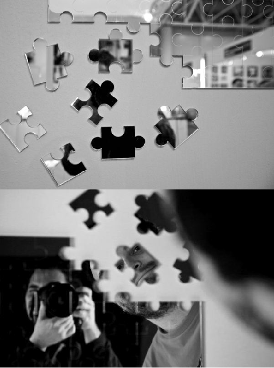
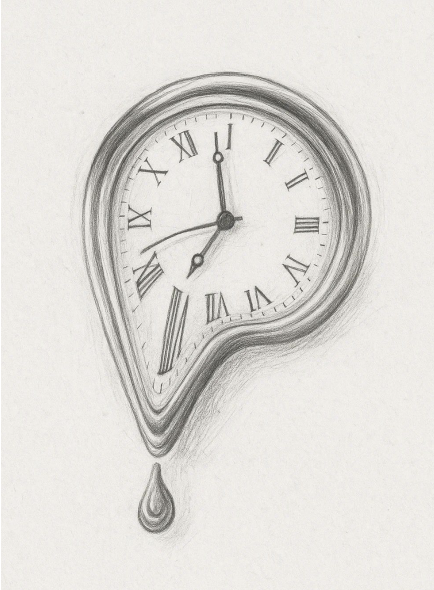
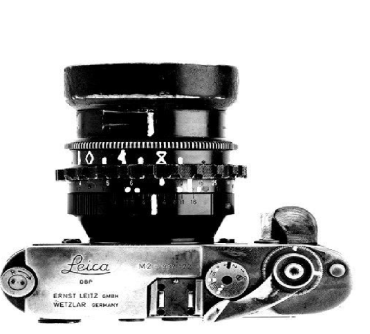
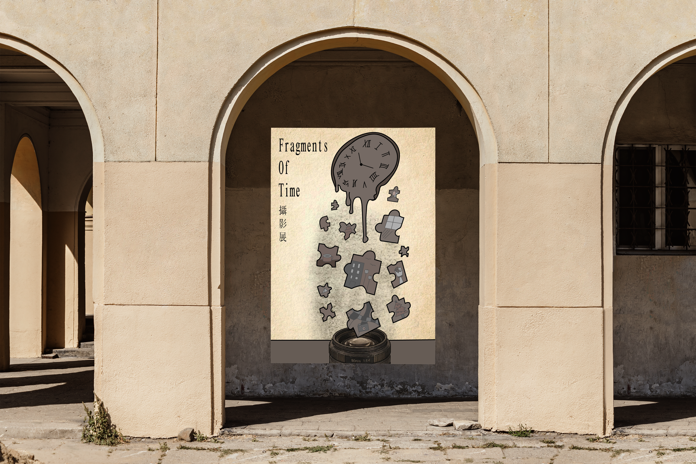

Fragments of Time
Inspiration → Sketch → Adobe Illustrator → AI Collaboration → Final Version → Mockups
Fragments of Time這個作品是一個攝影展海報，預期受眾是對記錄生活、拍照攝影有興趣的人，設計走向主要想透過融化的時鐘來表示時間的流逝，滴落的拼圖碎片代表生活中的片段記憶， 最終落入鏡頭表示收藏並留存這些記憶，所以我將時鐘、拼圖與攝影這三個元結合，呈現破碎卻彼此連結的關係。
01 / INSPIRATION
創作發想
一開始先從Pinterest上面蒐集一些關於攝影的素材，最後選擇了一個融化的時鐘、黑白拼圖以及復古的相機作為參考。




02 / SKETCH
繪製草圖
後來將我腦中初步的想法畫成草圖，我最後把時鐘安排在最上面，然後時鐘融化的感覺就像時間流逝，而它融化滴落的碎片變成一片一片的記憶，最後全部落入鏡頭中， 由上而下的視覺動線，讓整體看起來具有連貫性。

03 / ILLUSTRATOR
使用 Illustrator 完善草圖
將草圖放在底層，並使用鋼筆工具描繪出主要輪廓，決定大致的雛形，再調整細節與填入顏色，讓原本的概念可以更進一步完整。

04 / AI COLLABORATION
與 AI 溝通、調整視覺方向
完成初步作品後，我將成品提供給AI，並整理設計方向，我也請AI根據我的版本在生成出不同的呈現方式。

05 / FINAL VERSION
攝影展海報成品
這張海報主要想呈現出復古、懷舊的氛圍，所以整體色彩選擇了低彩度的棕色及灰色，並透過融化時鐘、記憶碎片與相機鏡頭呈現出「紀錄生活碎片」的感覺， 我也在每一個碎片中加入了不同物件，讓大家可以快速理解每一個碎片代表著記憶，讓概念變得更加具體。
希望透過一致的視覺風格以及代表元素，讓每一個觀賞者可以清楚理解核心主題，並感受到我想傳達出的氛圍。
06 / MOCKUPS
Mockups 情境展示
最後將完成的作品放入不同的情境，觀察海報在實際空間的效果。
